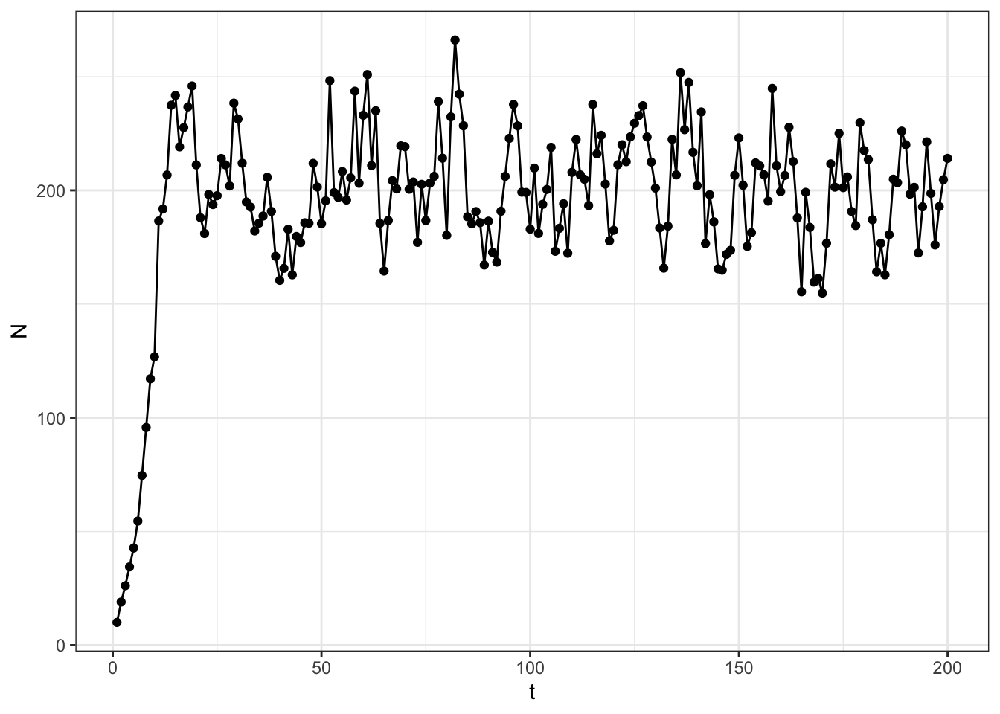
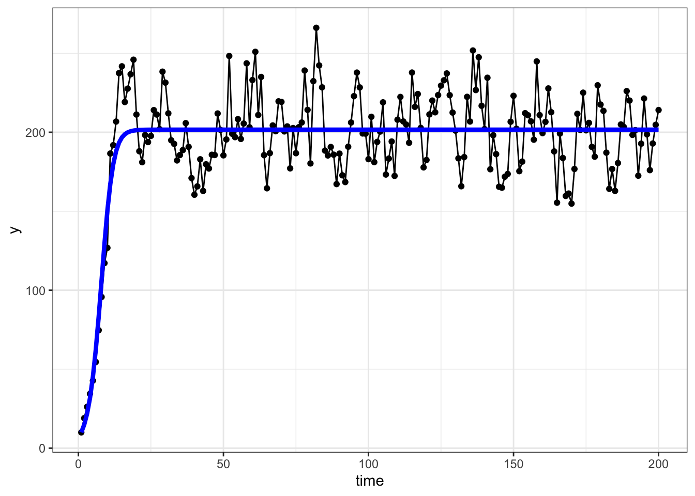

library(tidyverse)
set.seed(55688)
alpha <- 0.002
lambda <- 1.5
sigma <- 0.1
# specify initial population density
N0 <- 10Week 5
An intro to programming with R
Up to this point, we have focused on using the functions defined in the tidyverse family of packages, as well as those defined in base R. However, there will likely come a time when you want or need to do something in R for which you cannot find a package that has pre-built functions to accomplish your goal. You will therefore need to do a little programming, which may include writing your own functions. This lab is meant to introduce you to some useful concepts and functions to help you accomplish custom tasks.
A motivating example
Let’s pretend we are population biologists interested in simulating population growth based on the following model of population density over time:
\[ N_t = N_{t-1}\lambda e^{-\alpha N_{t-1} + \varepsilon_t} \tag{1}\]
where
- \(N_t\) is the population density at time \(t\)
- \(\lambda > 0\) is the intrinsic growth factor
- \(\alpha > 0\) is the intra-specific competition effect
- \(\varepsilon_t \overset{iid}{\sim} \mathcal{N}(0, \sigma^2)\) for all \(t=1,2,...\), adds demographic stochasticity.
How do we simulate such dynamics?
The initial conditions
First, we need a starting point, and we need to specify values for paramters \(\lambda\) and \(\alpha\). Let’s specify some arbitrary parameter values based on known limits for a stable population.
Okay, given the initial state of the population, \(N_0 = 10\), as well as some arbitrary parameter values, let’s simulate the population density at time \(t=1\) using Equation 1.
(N1 <- N0 * lambda * exp(-alpha * N0 + rnorm(1, sd = sigma)))[1] 14.51858Cool, now given \(N_1\), we can again simulate the population density for \(N_2\).
(N2 <- N1 * lambda * exp(-alpha * N1 + rnorm(1, sd = sigma)))[1] 21.44161Okay, this is pretty easy, but what if we want to do this for 100 or 1000 time steps? We obviously don’t want to write 1000 lines of repeating code 😳.
Repetetive tasks
Tackling repetitive tasks is something computers are really good at, so, naturally, there are many options for accomplishing repetitive tasks in R. We apply two base R options and one tidyverse option to the motivating example.
Loops 🔁
Loops are the bread and butter of many programs, but you will hear advice about avoiding loops in R. This is because loops are slow in R and may get bogged down with complicated loops that run over many iterations. However, most find them more intuitive than our other options in R, so we will start there.
for() loops
The structure of a for() loop in R is
for(<counter> in <list>){
# code to run each time goes here
}where we replace <counter> with the name of an object that changes with each iteration, and <list> with a list or vector that determines how the counter changes over the iterations. For example:
(list_of_values <- 1:4)[1] 1 2 3 4for(i in list_of_values){
print(i)
}[1] 1
[1] 2
[1] 3
[1] 4The list need not be numeric or consecutive or formatted in any way other than that it must be a vector of some class. For example,
office_chars <- c("Jim", "Pam", "Dwight", "Michael")
for(name in office_chars){
writeLines(name)
}Jim
Pam
Dwight
MichaelOkay, let’s add this to our R script, but let’s be sure not to hard-code any values into the script. This will allow us to change the simulations more easily later down the line.
# define variable for the number of time steps
steps <- 200
# initialize an empty vector with 200 time steps
N <- vector(mode = "double", length = steps)
# add initial population density
N[1] <- N0
# loop through the remainder
for(t in 2:steps){
N[t] <- N[t-1] * lambda * exp(-alpha * N[t-1] + rnorm(1, sd = sigma))
}
ggplot(data = data.frame(t = 1:steps, N = N)) +
geom_point(aes(x = t, y = N)) +
geom_line(aes(x = t, y = N)) +
theme_bw()

Cool!🤘
while() loops
Another type of loop is called a while() loop which continues to run while the condition specified inside the while() call evaluates to true.
Warning
While loops, if not constructed carefully, can result in infinite loops that will never stop running! It’s important to check your while loops on small test cases before trying to deploy them to bigger jobs so you don’t end up waiting for something to finish running that will never actually finish.
The structure of a while loop in R is
while(<logical expression>){
# do some task that changes the conditions
# evaluated in the logical expression
}This is a bit harder to understand off the bat in my opinion, so here are a couple examples:
# starting conditions
i <- 1
# set the logical expression to be evaluated
while(i <= 5){
# do some operations
print(i)
# do an operation that changes the conditions
# to be evaluated on the next iteration
i <- i + 1
}[1] 1
[1] 2
[1] 3
[1] 4
[1] 5A short aside into logical expressions
We have seen logicals once before when using filter() to subset a dataset. However, there are a few logical operators we have not seen. Here is a list of logical operators:
==: Will evaluate toTRUEif the objects on either side are equal to one another.<: Less than will evaluate toTRUEif the numeric value on the left of the operator is less than that on the right.>: Greater than will evaluate toTRUEif the numeric value on the left of the operator is greater than that on the right.<=: Less than or equal to will evalute toTRUEif the numeric value on the left of the operator is less than or equal to that on the right.>=: Greater than or equal to will evaluate toTRUEif the numeric value on the left of the operator is greater than or equal to that on the right.!=: Not equal to will evaluate toTRUEif the objects on either side of the operator are not equal.
Combining logical expressions using Booleans
We can combine multiple logical expressions using Boolean operators, | and &, which are said as or and and, respectively. For example,
a <- 4
3 < a & a < 6[1] TRUEevaluates whether a is between 3 and 6.
Answer
# set initial conditions
num <- runif(1, 0, 10)
lower <- 0
upper <- 1
# start the loop and stop once the answer is found
while(!(lower < num & num < upper)){
lower <- lower + 1
upper <- upper + 1
}
# once this stops, we get our answer with
paste("The random number is between", lower, "and", upper) |>
writeLines()while() loop for population growth
We could similarly write a while loop to simulate our population growth. The loop in that case would look something like
t <- 2
while(t <= steps){
N[t] <- N[t-1] * lambda * exp(-alpha * N[t-1] + rnorm(1, sd = sigma))
t <- t + 1
}but we will not change our script in this case to use a while loop. While loops are better for situations in which you don’t know exactly how many iterations it will take to finish a task (e.g., optimization routines), while for loops are better for cases in which you know the number of steps you will be looping over.
Using the apply() family of functions
Using apply() functions is generally preferred over for() loops in R because they are faster. However, they will not be as useful for simulating population growth because it is difficult to reference previous elements of whatever is being generated. In the population growth example, we use the previously simulated population size, N[t-1], in the calculation of N[t]. This sort of thing is not really what apply() was designed for. However, I will introduce apply() and the tidyverse version, purrr::map(), then demonstrate their use for a different purpose related to the population growth example.
Apply functions work best with existing vectors, matrices, or array. The general syntax is
apply(
X = <array>,
MARGIN = <the margin to which we apply the function>,
FUN = <some function to apply>
)where the X argument is a vector, matrix, or array, FUN is the function you want to apply to some MARGIN of the array. For example,
(X <- matrix(data = 1:6, ncol = 2)) [,1] [,2]
[1,] 1 4
[2,] 2 5
[3,] 3 6apply(X, MARGIN = 2, FUN = mean)[1] 2 5When we use apply functions with vectors, we can use some shortcut functions since they are one-dimensional and therefore only have one margin. lapply() applies a function to the elements of a vector of any class and always returns a list. sapply() is similar, but simplifies the results to be a simple vector (a vector of any other class besides a list). For example:
(eg_list <- list(1:3, 4:6, 7:9))[[1]]
[1] 1 2 3
[[2]]
[1] 4 5 6
[[3]]
[1] 7 8 9lapply(eg_list, sum)[[1]]
[1] 6
[[2]]
[1] 15
[[3]]
[1] 24sapply(eg_list, sum)[1] 6 15 24Using purrr::map() from tidyverse
The tidyverse option for completing repetitive tasks comes from the purrr package with the map() family of functions. The syntax for map() is a bit cleaner than apply() in my opinion (particularly when we get into more complex operations that we want to perform on each element), and is generally structured as
purrr::map(
<vector>,
~ {# do something with each element of vector}
)where the <vector> is, like with a for() loop, a vector (often a list) to loop over. The second argument can either be a named function (e.g., sqrt), or can start with a tilde. If it starts with a tilde, everything that comes after gets evaluated during each iteration, just like a for loop. Let’s see some examples.
purrr::map(eg_list, sum)[[1]]
[1] 6
[[2]]
[1] 15
[[3]]
[1] 24Here is another example where we use the tilde syntax.
Note
Note that .x always takes the place of the current element of the supplied vector in the code that is to be evaluated with each iteration.
purrr::map(
1:5,
~ .x^3
) %>% unlist()[1] 1 8 27 64 125Notice how I had to unlist the result of map() above. However, as with sapply(), there are shortcuts that belong to the family of map() functions. For example, if I know the result can be a double(), that is, a numeric vector, then I can use a shortcut:
purrr::map_dbl(
1:5,
~ .x^3
)[1] 1 8 27 64 125See ?purrr::map() for the details on the other shortcut functions.
Introducing functions
Before returning to the motivating example, let’s first take a step back to introduce how one writes their own functions in R. Recall that we said that functions in R are treated as just another R object with class function. Because of that, it turns out that it’s quite easy to define a function. The general form of a user-defined function is
my_function <- function(arg1, arg2){
# do something with arguments
return(result)
}You can include as many arguments as you need in a function and even specify default values for each argument. For example:
my_mean <- function(x, na.rm = TRUE){
n <- sum(!is.na(x))
return(
sum(x, na.rm = na.rm) / n
)
}This user-defined mean function defaults to removing NAs from the calculation. We can test it by loading it into the environment and feeding it test cases.
x <- c(2, 4, NA, 5, 7, NA)
my_mean(x)[1] 4.5mean(x, na.rm = T)[1] 4.5my_mean(x, na.rm = F)[1] NAmean(x)[1] NAIt can be very handy to define your own functions when you want to use apply() or map() for nuanced tasks. Here is an example using sapply().
# generate 5 random samples of size 20 from a normal distribution
samps <- lapply(rep(20, 5), rnorm)
# compute the sum of squared errors for each sample
sapply(
samps,
FUN = function(x, mu){sum((x - mu)^2)},
mu = 0
)[1] 13.365747 8.117842 13.354433 23.708973 13.958778The motivating example continued
Let’s return to the population growth example, but now imagine that you have data on population densities through time, as in Figure 1, and wish to estimate the parameters, \(\alpha\) and \(\lambda\), given the data. Indeed, there are sophisticated ways of doing this, but this lab is focused on repetitive computations, so we will use a brute force approach 💪.
First, let’s define our criteria for what constitutes a “good fit” to the data. For this, we will use the classic approach of minimizing the sum of squared error. That is, we want to minimize the sum of the squared distances between the observed data and the fitted model. Formally,
\[ \hat{\boldsymbol \theta}: \hat{\boldsymbol \theta} = \underset{\boldsymbol \theta}{\min} \sum_{i=1}^n (y_i - f({\boldsymbol \theta}, {\bf y}))^2 \] where \(\boldsymbol \theta = (\lambda, \alpha)^\top\) and \(f()\) is the model function.
A simple grid search
Based on the data, Equation 1, and theory of population biology, we can come up with some realistic ranges for possible values of the parameters. First, \(K = \frac{\log(\lambda)}{\alpha}\), where \(K\) is the carrying capacity of the population. Second, \(\lambda\) is the density-independent growth factor. This determines the factor by which the population is expected to grow when at low densities. So, if we look at our simulated data,
mean(N[2:5]/N[1:4])[1] 1.458651meaning that, when at low densities, the population grew by around 46% (a factor of about 1.46) on average over the first few years. So, perhaps a reasonable range for \(\lambda\) is [1.2, 1.7]. Then, given that \(K=\frac{\log(\lambda)}{\alpha}\), we can solve for \(\alpha\) using a guess of the carrying capacity.
Answer
I would guess that the carrying capacity is around \(N = 200\) since the population density oscillates around 200 or so for the latter part of the time series.
If we use our approximations to inform possible ranges of values for \(\boldsymbol \theta\), we can perform a simple grid search to see which combination of parameter values gives us the best model in terms of minimizing the sum of squared errors.
Let’s first establish the grid of parameter values over which we want to evaluate the sum of squared errors. This can be done using the expand.grid() function from base R.
# range for lambda
lam_range <- seq(1.2, 1.7, length.out = 100)
alpha_range <- seq(0.001, 0.003, length.out = 100)
par_grid <- expand.grid(lam_range, alpha_range)
# add some column names
colnames(par_grid) <- c("lambda", "alpha")
head(par_grid) lambda alpha
1 1.200000 0.001
2 1.205051 0.001
3 1.210101 0.001
4 1.215152 0.001
5 1.220202 0.001
6 1.225253 0.001We now have a each combination of \(\alpha\) and \(\lambda\) in our 100 \(\times\) 100 grid of combinations. The next step will be to write a function that computes the sum of squared errors between the model predictions and the observed data. For this, let’s start a new R script called R/ssq_ricker.R.
Note
It’s generally good practice to make your code modular in that it can stand alone and be applied in other situations. By putting the ssq_ricker() function in its own R script, it is available to me later down the line without needing to run or copy it over from some other analysis script to get it.
Here is what our new ssq_ricker.R script should look like:
ssq_ricker <- function(y, theta){
n <- length(y)
preds <- vector("double", length = n)
# create the model predictions given the initial population value
preds[1] <- y[1]
for(t in 2:n){
preds[t] <- preds[t-1] * theta[1] * exp(-theta[2] * preds[t-1])
}
# return the ssq
return(
sum((y[-1] - preds[-1])^2)
)
}To document this function, we can take advantage of some built in tools in RStudio that are there for developers. Put your cursor somewhere (anywhere) inside the function. Then go to Code -> Insert Roxygen skeleton. Your code should then look like this:
#' Title
#'
#' @param y
#' @param theta
#'
#' @return
#' @export
#'
#' @examples
ssq_ricker <- function(y, theta){
n <- length(y)
preds <- vector("double", length = n)
# create the model predictions given the initial population value
preds[1] <- y[1]
for(t in 2:n){
preds[t] <- preds[t-1] * theta[1] * exp(-theta[2] * preds[t-1])
}
# return the ssq
return(
sum((y[-1] - preds[-1])^2)
)
}Once you finish that, source the function code into the environment. We will then use apply() to find the “best” combination of parameter values out of our grid.
source(here::here("Lab/Day5/R/ssq_ricker.R"))Now, let’s apply our function to each row of the parameter grid.
ssq <- apply(
par_grid,
MARGIN = 1,
FUN = ssq_ricker,
y = N
)Now we just need to find which row gave the minimum sum of squared errors and we have our parameter estimates!
row_id_min <- which.min(ssq)
par_grid[row_id_min, ] lambda alpha
5364 1.518182 0.002070707There we go! These are close to what we used to generate the simulated data!
Warning
Note that this method really only works because we have data on population growth at low densities, allowing us to estimate \(\lambda\) and therefore \(\alpha\). Otherwise, we can estimate \(K\), but not \(\lambda\) and \(\alpha\) (at least with this approach) since \(K\) is a function of both \(\lambda\) and \(\alpha\) and we can’t solve for two unknowns with one equation.
Let’s see a plot of the model overlaid on the observed data. To do this, let’s first add a new script to the R directory called sim_ricker.R that has a function to generate predictions from the model. This could look like what’s below, but could be accomplished in many ways.
sim_ricker <- function(theta, N0, steps, stochastic = FALSE, sd = NULL){
if(stochastic){
if(is.null(sd)){
stop("When stochastic=TRUE, you must specify a sd for the random errors.")
}
N <- vector("double", length = steps)
N[1] <- N0
for(t in 2:steps){
N[t] <- N[t-1] * theta[1] * exp(-theta[2] * N[t-1] + rnorm(1, sd = sd))
}
} else{
N <- vector("double", length = steps)
N[1] <- N0
for(t in 2:steps){
N[t] <- N[t-1] * theta[1] * exp(-theta[2] * N[t-1])
}
}
return(N)
}Note that the code in the sim_ricker() function is similar to what we used in the ssq_ricker() function. Let’s go ahead and leverage this to clean up the ssq_ricker() function and use sim_ricker() inside of the sum-of-squares calculation.
# edited code for R/ssq_ricker.R
ssq_ricker <- function(y, theta){
# get model preds
n <- length(y)
preds <- sim_ricker(theta, N0 = y[1], steps = n)
# return the ssq
return(
sum((y[-1] - preds[-1])^2)
)
}Now, we can use our knowledge of lapply() to load all the functions we created inside of the Day5/R/ directory.
funs <- list.files(
path = here::here("Lab/Day5/R/"),
full.names = T
)
lapply(funs, source)Finally, we can overlay the fitted model on top of the data.
# create dataframe
# note that we have to convert the theta argument into a
# double. apply does this internally above when we use
# the function to find the parameter estimates
dat <- data.frame(
y = N,
time = 1:length(N),
preds = sim_ricker(
as.double(par_grid[row_id_min, ]),
N0 = N[1],
steps = length(N)
)
)
# plot
ggplot(dat, aes(x = time, y = y)) +
geom_point() +
geom_line() +
geom_line(
aes(y = preds),
color = "blue",
linewidth = 1.5
) +
theme_bw()